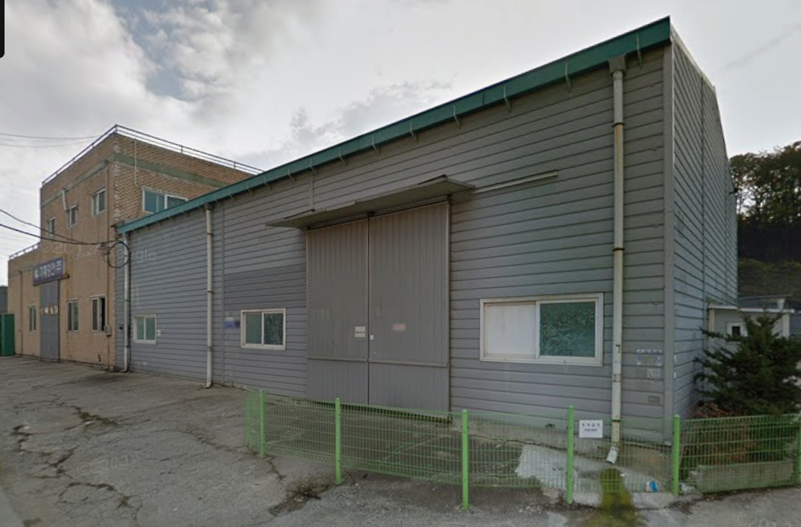
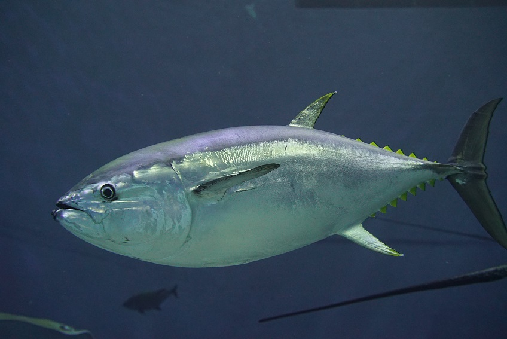
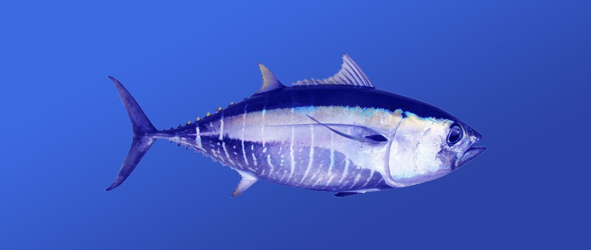
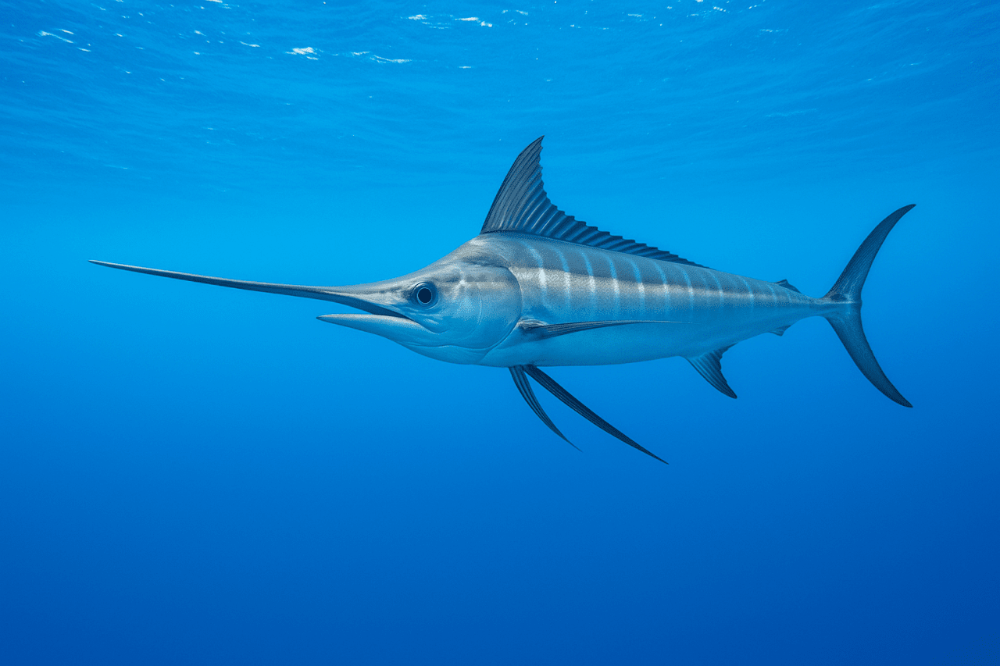

01
엄선된 품질
거래처의 용도와 품질 기준에 맞는 참치 제품을 선별하여 공급합니다.
PREMIUM TUNA DISTRIBUTION
바다의 신선함을 그대로 전달합니다.
시흥에서 엄선된 냉동 참치 제품을 안전하고 신속하게 공급합니다.
ABOUT YK

YK유통은 경기도 시흥시를 기반으로 참치 전문점, 일식당 및 외식업체에 품질 좋은 냉동 참치 제품을 안정적으로 공급하고 있습니다.
제품의 선별부터 보관, 출고, 배송까지 체계적으로 관리하여 거래처가 안심하고 사용할 수 있는 제품을 제공하는 것을 목표로 합니다.
YK유통에 문의하기 →거래처의 용도와 품질 기준에 맞는 참치 제품을 선별하여 공급합니다.
필요한 제품을 필요한 일정에 맞춰 안정적으로 공급합니다.
제품의 품질이 유지될 수 있도록 신속하고 안전하게 배송합니다.
OUR PRODUCTS
참다랑어, 눈다랑어, 황새치 등
다양한 참치 제품을 취급합니다.

고급 사시미 및 참치 전문점용

다양한 외식업체에서 활용 가능한 제품

부드러운 식감과 담백한 맛
DISTRIBUTION
필요한 품목과 수량을 상담합니다.
품목, 규격과 납품 일정을 확인합니다.
제품의 품질을 확인한 후 출고합니다.
거래처까지 신속하고 안전하게 배송합니다.